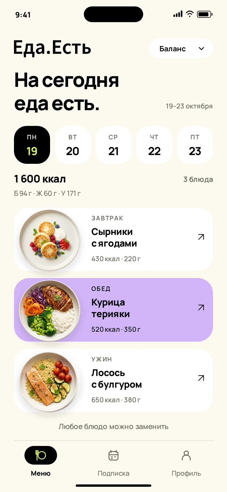
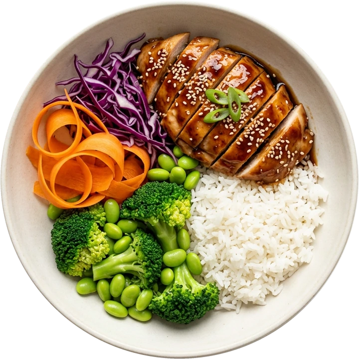

01
Выбери своё
Формат питания, блюда и дни.
Всё начинается с твоих планов.
Еда — в приложении.
В твоём расписании — жизнь.
Демо интерфейса — без регистрации.


Пара решений в приложении —
и один повод подумать
о чём-то другом.
Формат питания, блюда и дни.
Всё начинается с твоих планов.
Готовая еда приезжает к тебе.
Остаётся только разогреть.
Делами, друзьями, ничегонеделанием.
Готовка больше не в списке.
Не подстраивай жизнь под подписку.
Подстрой подписку под жизнь.
Готовые блюда: завтрак, обед и ужин. Идея Еда.Есть — убрать готовку из твоего расписания. Выбор питания и дней доставки — в приложении.
В концепции приложения можно смотреть меню по дням, открывать состав и заменять блюда. Здесь показаны примеры — реальные правила и доступные замены появятся при запуске сервиса.
В разделе «Подписка» предусмотрены перенос, пропуск дня, пауза и отмена. Там же — ближайшая доставка и следующее списание. Условия и сроки изменений ещё нужно определить перед запуском.
В карточке блюда: состав, масса порции, пищевая ценность и метки аллергенов. На этом сайте данные иллюстративные. Для реального меню их нужно подтвердить по рецептурам.
Пока это дизайн-концепция — приложение ещё не опубликовано. Можно посмотреть все пять экранов в демо без регистрации. Ссылки на магазины появятся после реального запуска.
Ты занимаешься своим делом.
Мы — едой.
Сейчас доступен просмотр концепции. Дата запуска не объявлена.